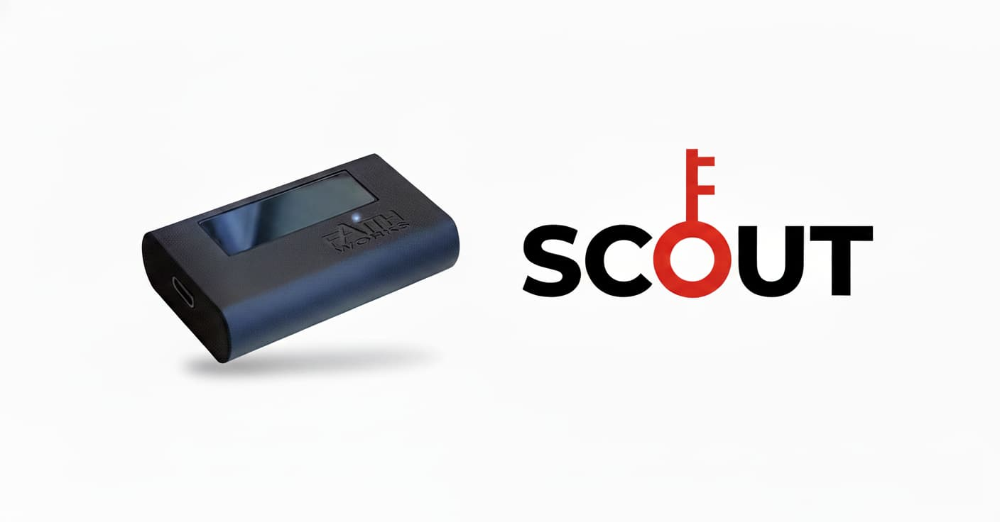

Financial-Grade Security
Equipped with liveness detection capabilities, effectively preventing forgery methods such as photos and videos, ensuring secure and reliable identity authentication.
FIDO2 Passkey
Portable, Biometric, Universal.
Official product information
Equipped with liveness detection capabilities, effectively preventing forgery methods such as photos and videos, ensuring secure and reliable identity authentication.
Works with any website or service that supports FIDO2 passkeys - Google, Microsoft, GitHub, and thousands of other services.
Uses standard USB 2.0 interface with instant setup - no additional driver installation required.
Sub-second authentication with 360° omnidirectional scanning. No precise positioning required for quick and convenient access.
Free management software for enrolling palm vein templates and configuring authentication settings.
Download nowOfficial applications
Secure access to corporate applications, cloud services, and enterprise systems with palm vein biometric authentication.
Works with any website or service that supports FIDO2 passkeys - Google, Microsoft, GitHub, and thousands of other services.
High-security authentication for banking, trading platforms, and financial applications requiring enhanced biometric protection.
Product data

* The image shown is representative of the final product.
* Specifications are subject to change with version and functionality updates. Refer to the latest product manual for current details.
* The data was measured under standard laboratory conditions by the company. The testing method references ISO/IEC 19795-1:2021. Actual performance may vary depending on factors such as the on-site environment, system configuration, and user behavior.
Included